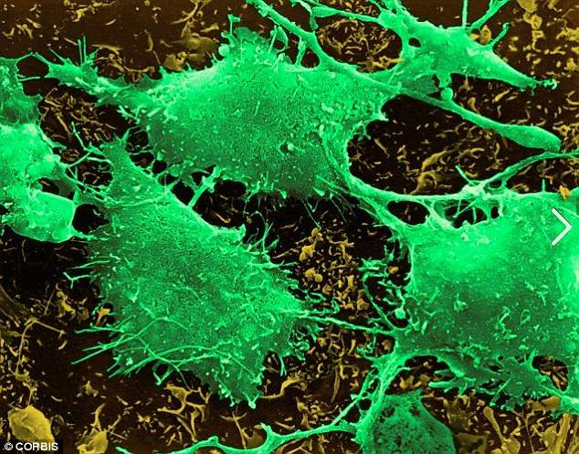

"During their tests, they had taken photos of their progress which involved the green element causing glitches in their phone screens. They had documented everything.

They decided they couldn't work alone on this anymore so they wrote report and sent all the proof they could collect that would validate their hypothesis. They sent the report to all the relevant departments that fell under the jurisdiction of Bangalore:
They waited for about three weeks but didn't receive any reply. The element seemed to be planted across the town again as the electronics went back to their earlier status of glitching. They knew that they themselves had to take action now. All they could do is set up posters. They restricted creating any digital patents or forums in town as their laptop or phones couldn't normally work. If they did want online help they had to travel to the city.
One good thing that came out of this was that people started noticing the electronic shut down across the town."